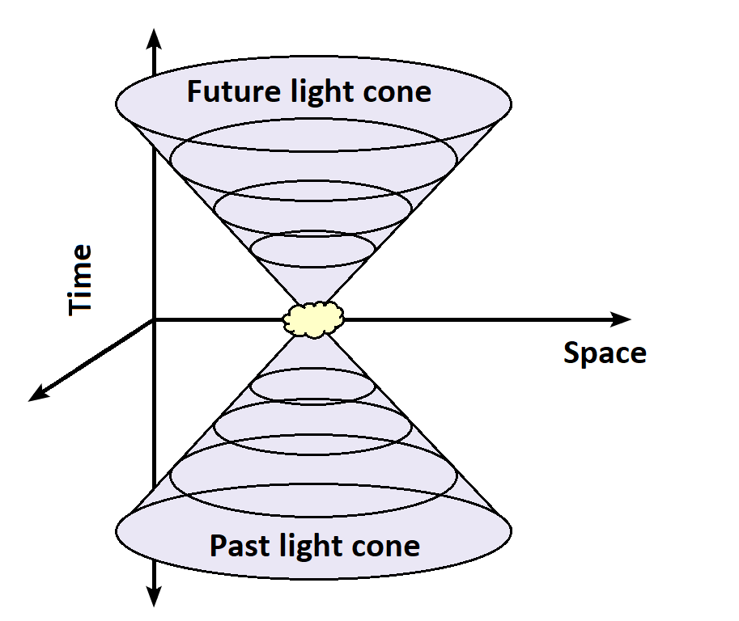

Before reading this article did you know about his evil tyrannical behaviour probably not you know why for a list of reasons
Now this is part the reason that he is so hard to get is the fact that he likely cloaks his empire due tot the fact we cannot see it thou satellite imagery and also he had made relations with malls and the fire department as he has been spotted alot in both also we know he has ability to warp space and time which is makes him practically impossible to catch likely using einsteins special relativity
| Crime Against Elves | Crimes In Other Countries | How hes still free | How to destroy his reign | FAQ | More Facts |